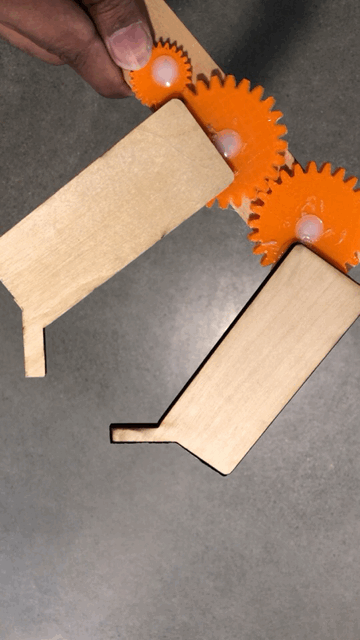
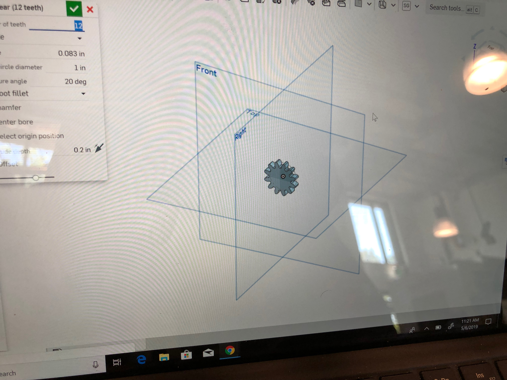
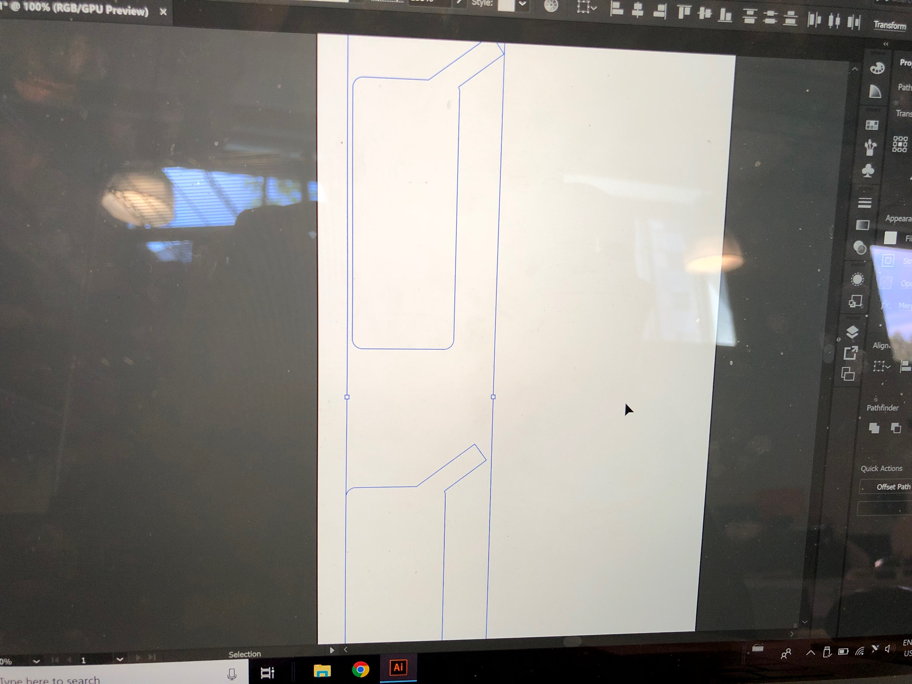
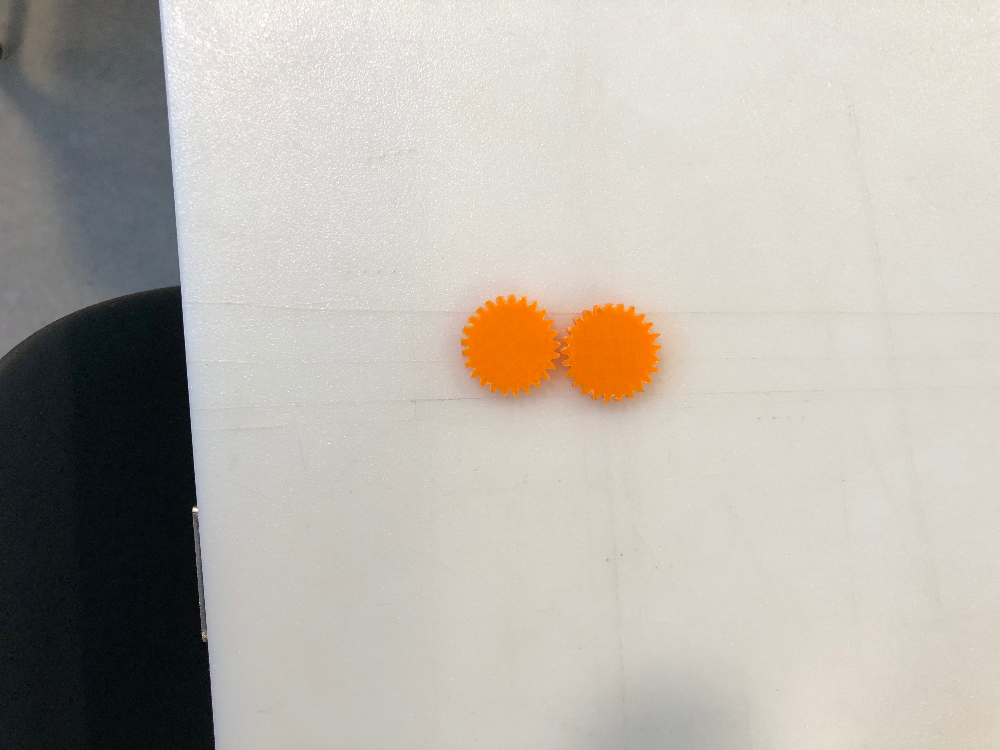
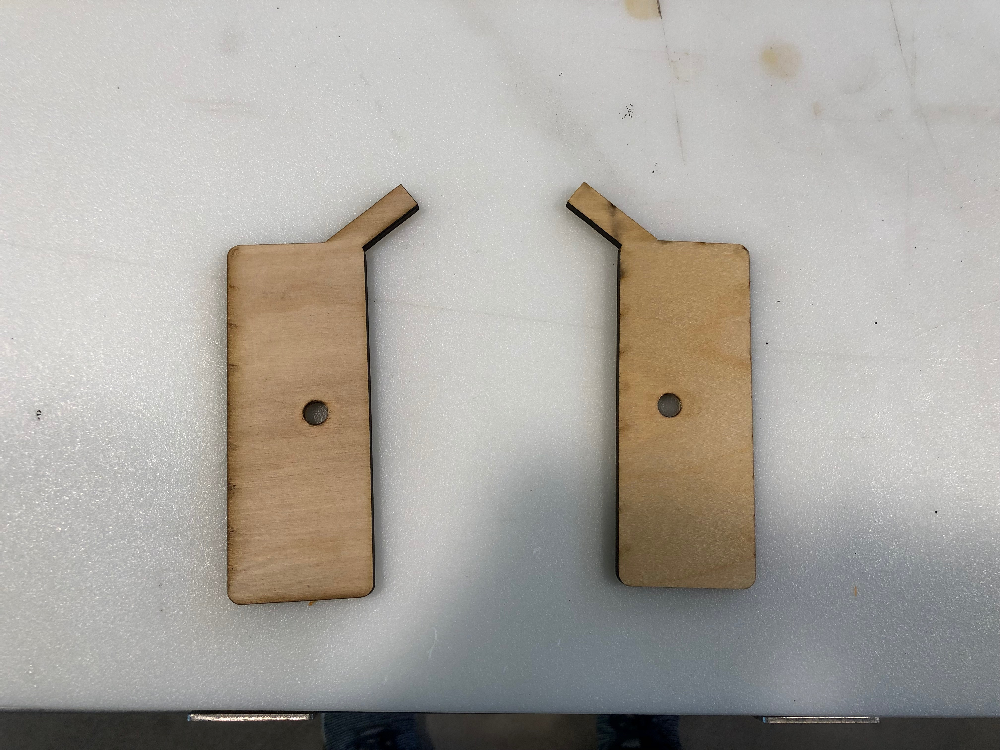
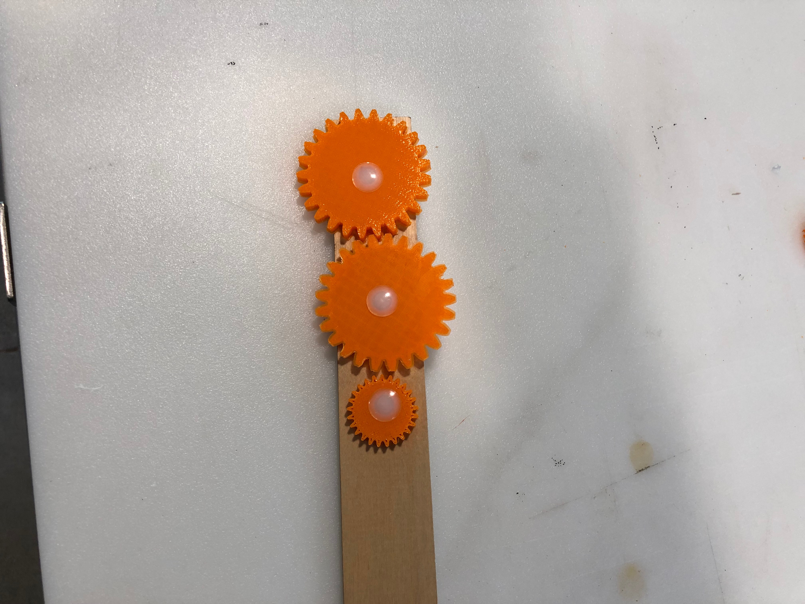
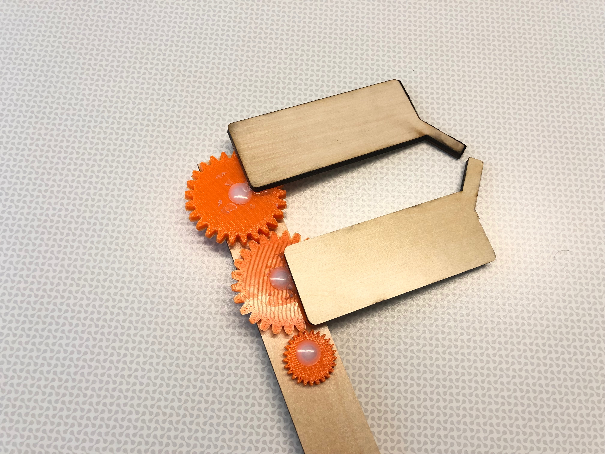
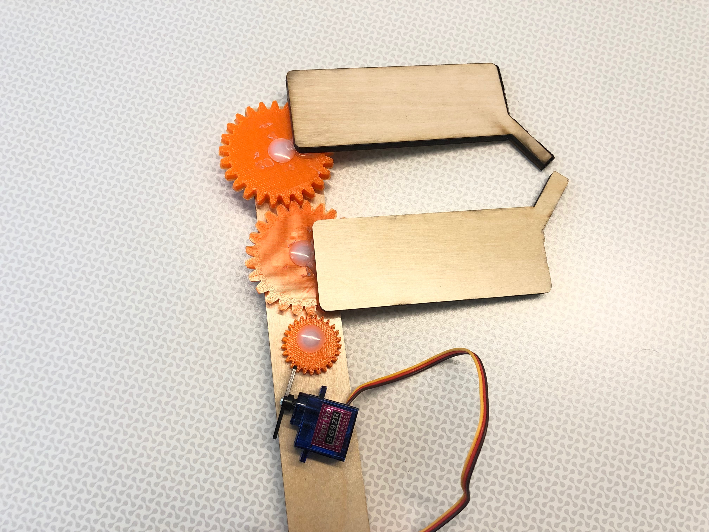

Toy End Effector

What is it?
A simple geared assembly that simulates a robot's end effector. Counteracting gears are used for the opening and closing action and a smaller gear is used to drive the motion.The mechanism here is neither geared up or geared down, but uses a 1:1 gearing ratio.
The Process
I decided to create a test prototype initially and therefore used onshape to create the gears individually. The end effectors were designed in illustrator in order to be laser-cut. 0.3 Inch holes were drilled on the gears and a linear piece of wood. The Push-in rivets were used to fasten the gears onto the linear piece of wood. The end-effectors were then glued to the gears.
 
The parts!!! The gears were 3d printed with PLA and the end effectors were laser-cut from scrap wood.
 
Machine settings
Laser cutter: Vector- Power:90% , Speed 20%.
3D printer: Nozzle temp: 235C, platform temp: 45C, 20% infill
1.0 Testing!!!
 

This model was created as a simple test and therefore lacks precision in the rivet holes and gear movement. As for the 2.0, I plan to model the entire assembly on onshape and use a motor to drive the gearing mechanism.
Other Miscellaneous Stuff!!!
2.0 ?
